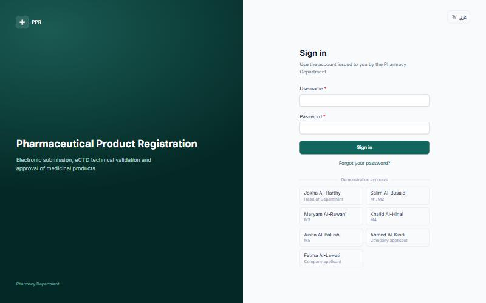
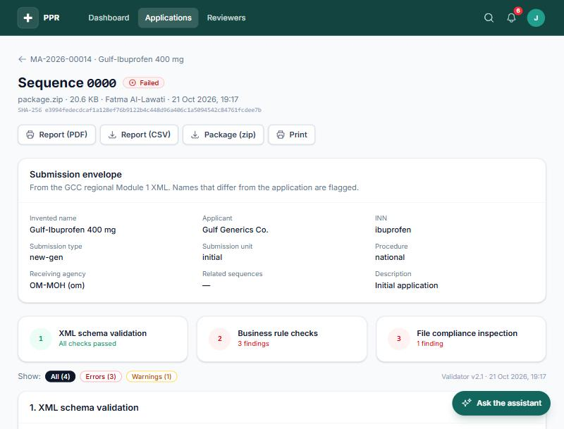
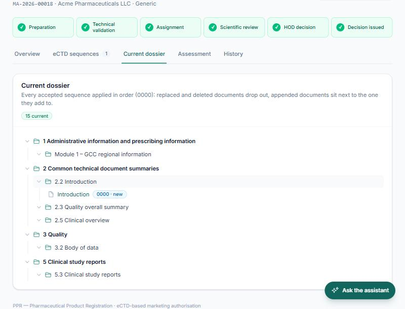
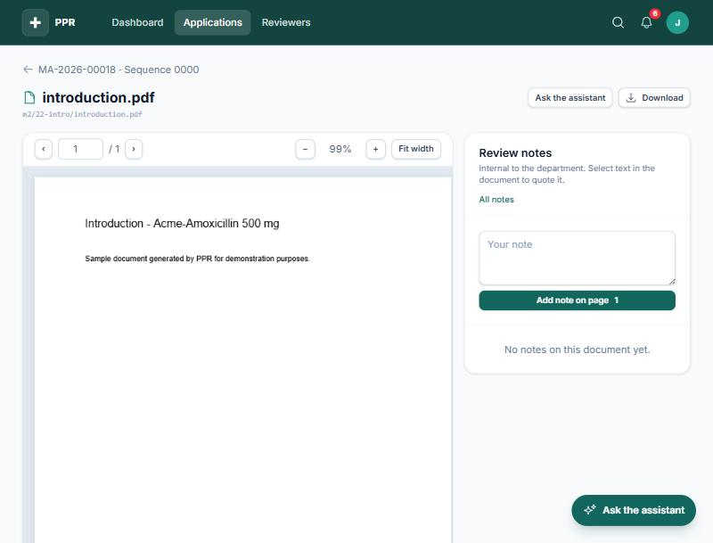
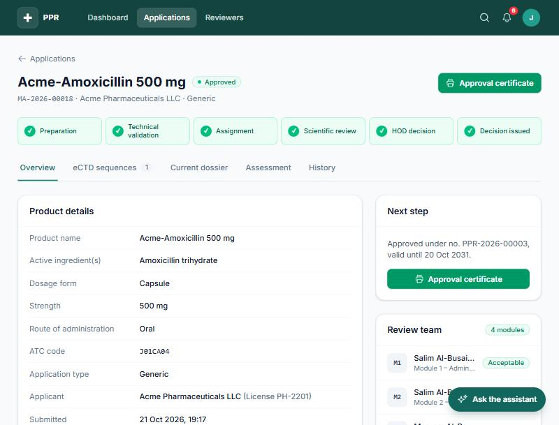
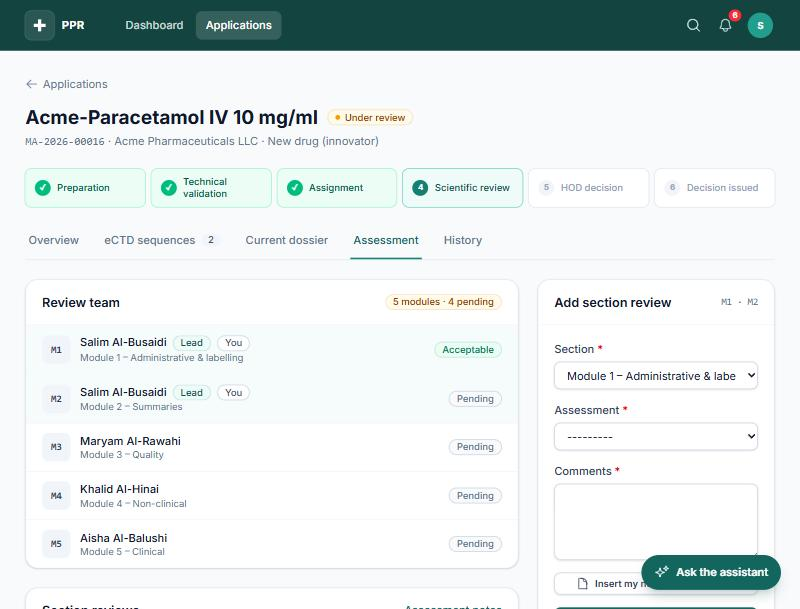
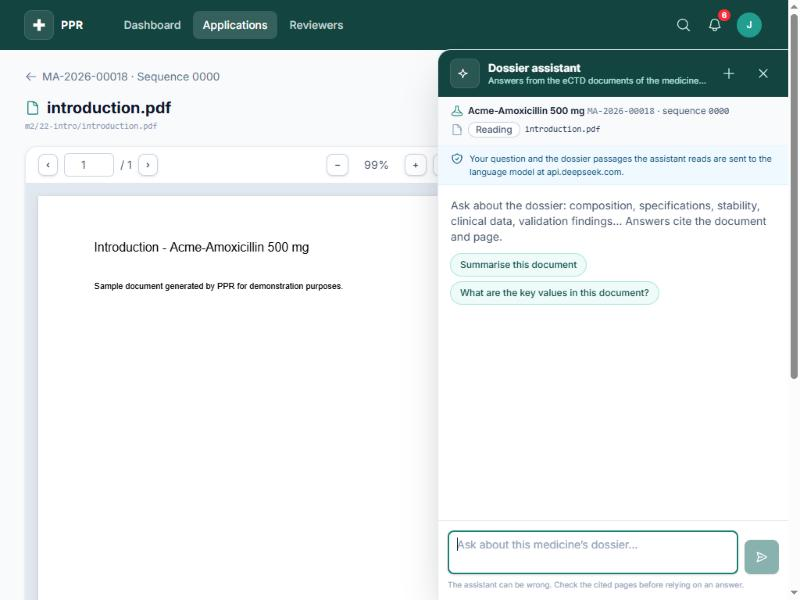
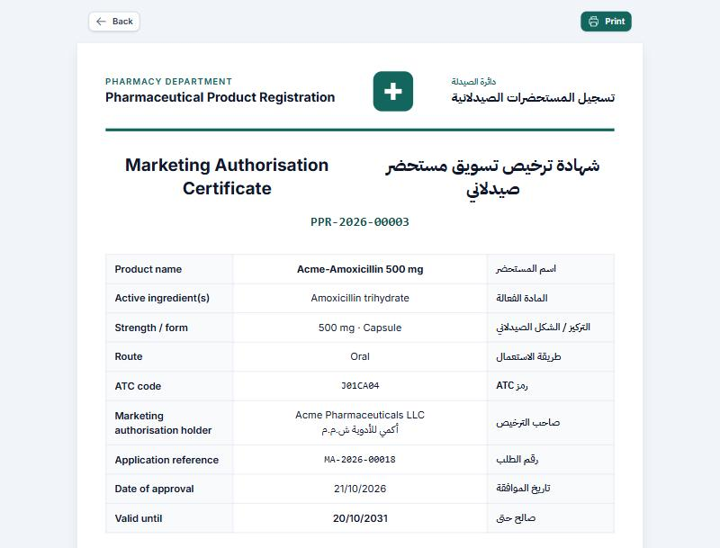
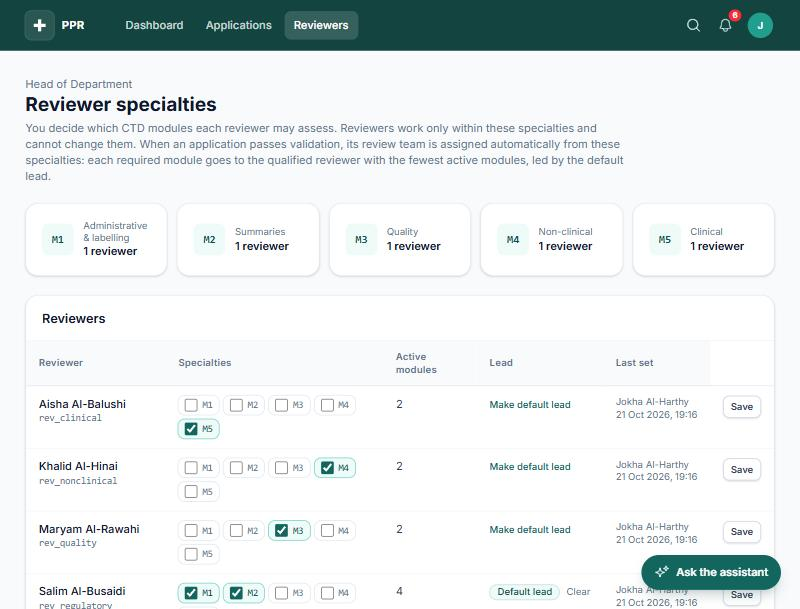
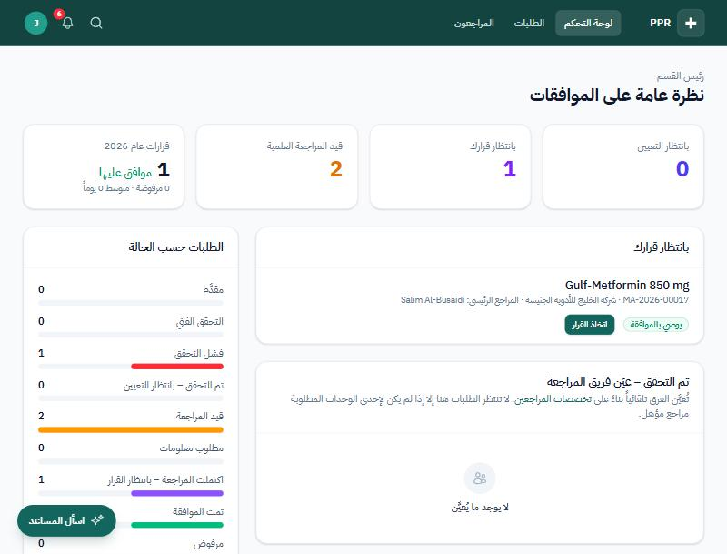

The PPR medicine approval system compared with the EXTEDO eCTD validation and review products used by regulatory authorities, revised after three weeks of development that closed most of the gaps the first comparison found — now with a side-by-side look at the two systems' screens.
This report compares PPR, the department's in-house medicine approval system, with the EXTEDO products that regulatory authorities use to receive, validate and review eCTD dossiers: EURS (desktop review system), EURSnext (its web companion, sold only to authorities) and EURSvalidator (the validation engine). It updates the first comparison (PPR-CMP-001 v0.1, 18 October 2026) after three weeks in which the project team closed most of the high-priority gaps that report identified, and adds a new side-by-side look at what each system's screens actually show (section 7).
The two remain different kinds of system, so they still overlap only in part:
EXTEDO EURS is a mature, specialised validation and dossier-review tool. By EXTEDO's account, more than 35 authorities use it, including the European Medicines Agency (EMA). EXTEDO also names Oman, Saudi Arabia, Bahrain, Qatar and the UAE among the agencies that use or recommend EURS or EURSvalidator. Its strengths are official, regularly updated validation criteria for each region (GCC included), deep document-review tools (annotation, full-text search, lifecycle navigation) and enterprise scale.
PPR is an end-to-end registration workflow system: a company portal, automated eCTD validation, assignment of specialist reviewers per CTD module, information requests, the HOD's decision, and a bilingual approval certificate. Its interface is in Arabic and English, it has an AI dossier assistant, and the department owns it.
Key finding. The balance has shifted since v0.1. PPR's validator now runs against the official ICH eCTD 3.2 DTD (checksum-verified) and implements the GCC Module 1 v1.5 criteria as explicit rules — the two items the first report flagged as most important before go-live are done in code. PPR also gained background (queued) validation, a printable short/long PDF report, a cumulative dossier view, department-wide search, an integration API and optional staff single sign-on. EXTEDO remains ahead on reach and proof: validation sets kept current across every region by the vendor, true in-PDF annotation, NeeS and eCTD 4.0 support, and years of production use at 35+ authorities including the EMA. PPR remains the only one of the two that runs the whole registration case — company portal, validation, specialist review, decision and certificate — in one system.
What is not yet done. PPR's validation criteria have not been independently checked against a real
reference validator: the benchmark procedure is written (docs/validation_benchmark.md) and the
tooling exists, but the department has no EURSvalidator evaluation licence to run it against, so this has
not been executed. The new system-validation documentation (URS, risk assessment, IQ/OQ/PQ protocol) is
drafted and every requirement is traced to an automated test, but qualification execution and the HOD/QA/IT
sign-off have not happened. The GCC regional DTD PPR validates against is still transcribed from the
published specification text, because SFDA does not distribute the file itself.
Recommendation (section 10, unchanged in substance). Keep PPR as the registration and workflow system. The two most important remaining steps are to run the validation benchmark against EURSvalidator (or another reference validator) and to execute and sign off the qualification protocol, before go-live. If budget allows, an integration in which PPR manages the case and calls an EXTEDO validator or review tool remains a viable fallback if the benchmark turns up material gaps.
PPR: the code in the project repository as of 21 October 2026, including uncommitted work in progress
at the time of writing. This update reviewed the README, data models, validation rules (apps/validation/),
workflow, tests, and the new validation documentation set in docs/validation/
(URS, risk assessment, IQ/OQ/PQ protocol, traceability matrix) and docs/validation_benchmark.md.
EXTEDO: the products offered to regulatory authorities (EURS, EURSnext, EURSvalidator), plus eCTDmanager where the applicant side is relevant. The wider EXTEDOpulse RIM suite (registration, safety, quality and document hubs) is mentioned only where it fills a gap. This update re-checked EXTEDO's current public pages; their structure has changed since v0.1 under EXTEDO's "a Cormeo brand" refresh, but the products and their described capabilities have not.
| Type | Web-based registration workflow system with built-in eCTD validation |
| Built by | PPR project team for the Pharmacy Department (in-house) |
| Users | Company applicants, specialist reviewers, the lead reviewer, the HOD and an administrator |
| Technology | Django, Tailwind CSS, SQLite locally and MySQL on PythonAnywhere |
| Languages | English and Arabic (right-to-left) |
| Validation | 31 rules in 3 layers (XML schema, business rules incl. GCC Module 1 v1.5, file compliance), against the official ICH eCTD 3.2 DTD |
| Status | Proof of concept with an automated test suite (23 traced requirements); qualification protocol drafted but not yet executed; not yet in production |
| Type | Commercial eCTD/NeeS validation and review software for authorities |
| Vendor | EXTEDO (Germany), a Regulatory Information Management (RIM) vendor, now "a Cormeo brand" |
| Users | Agency validators and assessors, including external assessors (EURSnext) |
| Technology | Windows desktop and server services; EURSnext runs in the browser |
| Languages | English; Arabic is not mentioned in the material reviewed |
| Validation | Official validation sets per region, including all GCC member states, sold as subscription packages, selected automatically |
| Status | Mature product; selected for EMA use and offered to EU national authorities |
| Process step | PPR | PPR | EXTEDO | EXTEDO (authority-side products) |
|---|---|---|---|---|
| Applicant builds the dossier | — | Not covered. Companies build the eCTD with their own tools. | ✓ | eCTDmanager (applicant product) builds, validates and publishes dossiers. |
| Applicant submits | ✓ | Company portal: create the application, upload the sequence ZIP, submit. | ↝ | Via gateway: receipt through CESP connect, EMA Common Repository connector, server monitoring. |
| Technical validation | ✓ | Automatic on submission or queued in the background; 31 rules against the official DTD and GCC M1 v1.5. | ✓ | EURSvalidator with official regional validation sets, auto-selected. |
| Scientific review | ✓ | Assessment per CTD module by a named specialist, recorded in the system. | ✓ | Viewing, search, annotation and export of annotations for the assessment report. |
| Case management (assignment, questions, deadlines) | ✓ | Automatic team assignment by workload, information requests, status tracking, notifications. | ? | Not stated: filtering by regulatory activity; case workflow through the API or other EXTEDO hubs. |
| Decision and certificate | ✓ | HOD approves or rejects; bilingual certificate with validity period. | — | Not part of EURS. |
Full available and substantial Partial available but limited None not available Not stated not described in the public material · changes since v0.1 are marked ▲
| Capability | PPR | EXTEDO | Comment |
|---|---|---|---|
| VALIDATION | |||
| eCTD v3.2.2 validation | Full ▲ | Full | PPR now validates against the official ICH DTD, checksum-pinned (was: reference copy) |
| GCC Module 1 validation | Full ▲ | Full | PPR implements GCC M1 v1.5 as rules (was: existence/well-formedness only). Regional DTD is still transcribed from the spec, not SFDA's own file |
| NeeS and other formats | None | Full | PPR accepts eCTD only — unchanged |
| eCTD 4.0 readiness | None ▲ | Partial | PPR now recognises an eCTD 4.0 package and refuses it with a clear message (was: no handling); still no validation support. EXTEDO says it is "prepared for" eCTD 4.0 |
| PDF compliance checks | Full | Full | PPR: version, security, JavaScript, fonts — unchanged |
| Validation report export | Full ▲ | Full | PPR now adds a printable short/long PDF report alongside on-screen and CSV (was: on-screen/CSV only). EXTEDO additionally auto-saves and emails the PDF itself |
| REVIEW | |||
| CTD tree and dossier viewer | Full | Full | Unchanged |
| Lifecycle (cumulative) view | Full ▲ | Full | PPR's "Current dossier" tab now applies replace/append/delete across all accepted sequences (was: sequence-by-sequence only) |
| PDF annotation | Partial ▲ | Full | PPR adds page-linked review notes, quoting selected text, inserted into the module assessment (was: none). Still not in-PDF highlighting/markup the way EXTEDO describes it |
| Full-text search | Full ▲ | Full | PPR now searches every dossier a reader may open, not just the one open in the assistant (was: single-dossier only) |
| AI dossier assistant | Full | Not stated | PPR: cited answers, offline mode without a key; a smoke-test command exists but a live-model run has not been recorded |
| WORKFLOW AND ADMINISTRATION | |||
| Applicant portal | Full | None | EXTEDO receives dossiers through gateways — unchanged |
| Specialist assignment per module | Full | Not stated | PPR: automatic by workload is now the default, with manual HOD assignment as a fallback |
| Information requests | Full | Not stated | Unchanged |
| Decision and certificate | Full | None | Unchanged |
| KPIs and dashboards | Full ▲ | Not stated | PPR: HOD dashboard with status breakdown, reviewer workload and average days to decision — a complete departmental KPI view, not an enterprise BI suite |
| Audit trail | Full | Full | Unchanged |
| Arabic interface | Full | Not stated | Unchanged — see section 7 for a real screenshot |
| PLATFORM | |||
| Integration API / SSO | Partial ▲ | Full | PPR now has a key-protected read-only JSON API and optional staff OpenID Connect SSO (was: none). No write API, Active Directory binding or document-management connectors yet |
| Scale and parallel processing | Partial ▲ | Full | A background validation queue now decouples large uploads from the web request (was: fully synchronous); still a single web application, not distributed services |
| Formal system validation | Partial ▲ | Full | URS, risk assessment, IQ/OQ/PQ protocol and an automated traceability matrix are now drafted and every requirement is tested (was: none); execution and sign-off are still outstanding |
| Area | PPR | EXTEDO |
|---|---|---|
| Primary purpose | Manage a marketing authorisation application from submission to certificate, with validation built in. | Validate, accept, import, review and maintain eCTD and NeeS submissions inside an authority. |
| Submission intake | Companies upload one ZIP per sequence (0000, 0001, …) through the portal. Safety checks on the ZIP: no zip-slip, symlinks, encryption or zip bombs. | Import from gateways: CESP connect (automatic import of CESP/FTP receipts), CR Connect (EMA Common Repository), and server monitoring that unzips and imports automatically. |
| Application types | New drug, generic, variation, renewal. The modules required for each type are enforced by rule BR-06. | Any standard submission format and regulatory activity; filtering by activity and by product status. |
| Validation engine | 31 rules in 3 layers against the official ICH eCTD 3.2 DTD and the GCC Module 1 v1.5 criteria, each rule a small class so new ones are easy to add. Runs synchronously in development or in a background queue in production (VALIDATION_MODE); any error fails the sequence, warnings let it pass. | EURSvalidator applies official validation sets that EXTEDO keeps current in cooperation with authorities. The validation set and DTD are selected automatically. Batch validation of all pending submissions. |
| Validation results | Stored per run with findings; shown as a report with CSV export and a printable short/long PDF report, linked from the validation email. | Short PDF report (errors) and long PDF report (errors, warnings and details); reports are saved automatically and can be emailed. |
| Dossier navigation | CTD tree for each accepted sequence, plus a cumulative "Current dossier" view applying every replace/append/delete across sequences, with links to the documents (served through access-controlled views). | Navigation through the whole lifecycle of a product, envelope information, and table-of-contents elements. |
| Document review tools | PDFs open in the browser. Reviewers add page-linked notes, optionally quoting selected text, collected for the assessment. The assistant can search and read documents and cites sequence/path p.N. | Annotate, highlight and hyperlink PDFs without changing the originals; export annotations to support the assessment report; full-text search across documents, envelopes, TOC elements and annotations. |
| Review organisation | The HOD sets each reviewer's specialties (M1–M5); the review team is now assembled automatically by workload (least-loaded qualified reviewer per module, with a default lead), or by hand when a module has no qualified reviewer. Reviewers write assessments only for their own modules; the lead sends questions and the recommendation once every module is assessed. | Parallel work by many users. Not stated: per-module assignment, recommendation or decision workflow. |
| Communication with applicants | Information requests with due dates; the company answers with a validated response sequence. In-app and email notifications. | Not stated for EURS (handled outside the review tool). |
| Decision | The HOD approves (bilingual certificate with a validity period), rejects, or returns the application to the lead. | Not part of EURS. |
| AI assistance | Dossier assistant on every page: knows the current application and document, uses read-only tools limited to what the reader may see, and runs in offline mode (search passages) without an API key; a smoke-test command checks a configured model's citations. | Not stated in the material reviewed. |
| Security and access | Role-based access, documents served only to authorised users, audit trail in StatusHistory, plus optional OpenID Connect single sign-on for staff. | Extensive audit trail of user activity; Active Directory integration; optional storage in a document management system (Documentum, FileNet). |
| Integration | Key-protected read-only JSON API for other Ministry systems, plus optional SSO (was: Django admin only). | REST API, command-line automation engine, Web Broker for task queues, connectors for portals and document management systems. |
| Scale | Single web application on PythonAnywhere; large uploads and validation now run through a background worker queue, decoupled from the web request. | Scales beyond 400 users; background Windows services and load balancing for long imports and validations. |
| Deployment | Web; PythonAnywhere with MySQL. No client software. | EURS: desktop client with server services, installed on site. EURSnext: browser access, suited to external assessors. |
| Language | English and Arabic, with a full right-to-left layout. | English; Arabic not mentioned. |
| Cost and ownership | Owned by the department; hosting costs and staff time. Can be changed freely. | Commercial licences and validation-set subscriptions, priced per region (prices not public). Updates to standards are the vendor's job. |
| Validation documentation | URS (23 requirements), risk assessment (12 hazards) and an IQ/OQ/PQ qualification protocol are drafted, with every requirement traced to automated tests. Execution and HOD/QA/IT sign-off have not happened yet. | Not stated in the material reviewed; EXTEDO's flyers state the product is validated by the vendor and "installed and validated within days" at a customer site. |
| Maturity and references | Proof of concept with automated tests and a drafted validation pack; no production use yet. | Selected for EMA use and offered to EU national authorities; EXTEDO reports more than 35 authority customers, including GCC agencies. |
Technical validation was the HOD's core requirement, so it is compared in more detail. Both systems follow the same principle as the FDA and EMA: an automated technical check must pass before scientific review starts.
| Layer | Rules | What is checked |
|---|---|---|
| 1. XML schema | SCH-01 to SCH-04, GCC-01 to GCC-02 | index.xml exists, is well-formed and is valid against the official ICH eCTD 3.2 DTD; the regional Module 1 XML exists, is well-formed and its root is gc:gc-backbone. |
| 2. Business rules | BR-01 to BR-10, GCC-03 to GCC-09 | Sequence numbering; index-md5.txt; every leaf points to an existing file with a matching MD5; no unreferenced files; required modules for the application type; lifecycle operations resolve to earlier accepted sequences; ICH file naming and path length; the GCC envelope (receiving agency, submission type and unit, related sequences) and the required Module 1 documents for Oman, including Arabic and English leaflets. |
| 3. File compliance | FC-00 to FC-08 | Safe ZIP; accepted file formats (DOCX only in Module 1); PDFs not password-protected; PDF version 1.4–1.7; no JavaScript or launch actions; embedded fonts (warning); size limit; no empty files; searchable text rather than scanned images (warning). |
docs/validation_benchmark.md, manage.py benchmark_validation, automated regression
tests in apps/validation/benchmark.py), but the department has no EURSvalidator evaluation
licence to run it against, so PQ-02 in the qualification protocol is still open. GCC applicants typically
validate their sequences with EXTEDO tools before submitting; until the benchmark runs, there remains a
residual chance that a dossier which passed the applicant's check could fail in PPR, or the reverse. This is
now the single most important step before go-live.
PPR's screens below are real screenshots, captured on 21 October 2026 from the running application using demonstration data (fictional companies and products seeded for review — no real applicant information). EXTEDO's current marketing pages do not carry screenshots of the live product, so for most pairs the EXTEDO side is shown as a short, directly sourced description instead of a reconstructed or simulated image. Any EXTEDO screenshot that does appear is reproduced from EXTEDO's own published material and credited to it — it is not an independent test of the product (see section 2).




EURS and EURSnext validate and review submissions inside an authority; they do not run the registration case itself. The six screens below have no counterpart in the vendor material because EXTEDO's own flyers describe this ground as outside EURS (see sections 3–5).






The first comparison listed twelve gaps between PPR and the level of the EXTEDO tools for the parts the department needs. The table below carries the same numbering and tracks what has happened to each one since 18 October 2026.
| # | Gap (v0.1) | Status | What happened / what is left | Priority |
|---|---|---|---|---|
| 1 | Reference DTD instead of the official one | Closed | The official ICH eCTD v3.2.2 DTD is bundled and checksum-verified (apps/validation/dtd/README.md, test_bundled_dtd_is_the_official_ich_dtd). | High |
| 2 | GCC Module 1 checked only for well-formedness | Closed | GCC M1 v1.5 implemented as rules GCC-01 to GCC-09 (apps/validation/regions/gcc.py). The regional DTD file itself is still a transcription — tracked below as a residual note, not a reopened gap. | High |
| 3 | No benchmark against a reference validator | Open | Procedure, sample-package generator and comparison tooling are built and tested (docs/validation_benchmark.md, apps/validation/benchmark.py). Not run: the department has no EURSvalidator evaluation licence. This is PQ-02 in the qualification protocol. | High |
| 4 | Synchronous validation on PythonAnywhere | Closed | VALIDATION_MODE=queue plus run_validation_worker as an always-on task; stale jobs are requeued and failures notify the company (test_validation_queue.py). Upload size limits for very large dossiers still need confirming in production (PQ-01). | High |
| 5 | No formal system validation | In progress | URS (23 requirements), risk assessment (12 hazards), an IQ/OQ/PQ protocol and an automated traceability matrix are drafted, with every requirement linked to tests. All three documents are "version 0.1, draft" with blank signature blocks and an empty execution log — qualification execution and HOD/QA/Ministry IT sign-off are the work still to do. | High |
| 6 | No cumulative lifecycle view | Closed | "Current dossier" tab applies replace/append/delete across all accepted sequences (test_lifecycle_view.py). | Medium |
| 7 | Validation report only on screen and as CSV | Closed | Printable short and long PDF validation reports added (test_validation_report.py). | Medium |
| 8 | No review annotations | Partly closed | Page-linked notes, optionally quoting selected text, collected and inserted into the module assessment (test_document_notes.py). This is notes alongside the page, not true in-PDF highlighting/markup — the original gap's "kept separate from the file" goal is met; the annotation-on-the-document itself is not. | Medium |
| 9 | Assistant tested only in offline mode | Open | A data-protection decision framework is written (docs/assistant_data_protection.md) and a smoke-test command exists, but the HOD has not yet recorded a decision on where the model runs, and no live-key test has been logged. | Medium |
| 10 | Search limited to one dossier | Closed | Full-text search across every dossier a reader may open, grouped by document, with a MySQL FULLTEXT index (test_search.py). | Low |
| 11 | No integration interface or single sign-on | Closed | Key-protected read-only API plus optional OpenID Connect SSO for staff (docs/sso.md, test_api_and_sso.py). | Low |
| 12 | No eCTD 4.0 or NeeS support | Open | An eCTD 4.0 package is now recognised and refused with a clear message instead of being mishandled. No actual eCTD 4.0 or NeeS validation support was added; still low priority while GCC authorities remain on eCTD 3.2. | Low |
Summary: 7 of 12 closed outright, 1 partly closed, 1 in progress with documentation complete but unexecuted, 3 still open. The three open items (3, 9, 12) and the in-progress item (5) are the focus for the next cycle of work; of these, item 3 (the benchmark) and item 5 (qualification sign-off) are what stand between PPR and a defensible go-live decision.
| Option | Description | Advantages | Disadvantages |
|---|---|---|---|
| A. PPR on its own | Continue PPR; run the benchmark and execute the qualification protocol (section 9, items 3 and 5). | Lowest cost; full control; Arabic; complete workflow; the design-level validation gap from v0.1 is already closed. | The team must still prove its GCC criteria against a reference validator and complete formal sign-off. |
| B. EXTEDO on its own | License EURS/EURSnext and EURSvalidator; manage the workflow outside the system (email, paper, spreadsheets). | Proven validation and review tools; vendor support. | No portal, assignment, decision or certificate; licence costs; English only. |
| C. Hybrid | PPR manages the case, portal and decisions; an EXTEDO validator or EURS is called through its API, or used alongside PPR for validation and review. | Best validation and review depth together with the department's own workflow. | Licence costs plus integration work; two systems to support. |
Recommendation. Proceed with option A and keep option C open, same as v0.1 — but the next steps have narrowed:
Vendor material is quoted as the vendor's own claims. EXTEDO links re-checked 21 October 2026; the PPR comparison report v0.1 was based on material retrieved 18 October 2026.
README.md, apps/applications, apps/validation, apps/assistant, apps/accounts, tests/ (state as of 21 October 2026)docs/validation/urs.md, risk_assessment.md, iq_oq_pq.md, traceability.md — PPR-VAL-URS, PPR-VAL-RA, PPR-VAL-QP (version 0.1, draft)docs/validation_benchmark.md — benchmark procedure against a reference validatordocs/sso.md, docs/assistant_data_protection.md